Mockup JDIH DPRD Kota Singkawang
Arah visual: standar kategori, dikerjakan serapi mungkin. Mockup awal disetujui 2026-11-20 dan sudah menjadi kode. Perubahan susulan (menu Profil, Kebijakan Privasi, Kebijakan Cookie; bagian 6, dan widget aksesibilitas; bagian 7, pratinjau dokumen; bagian 8, serta WhatsApp dan Asisten AI; bagian 9) disetujui 2026-11-27 dan sudah dikodekan.
Cara meninjau
- Klik gambar untuk PNG ukuran penuh, atau Buka halaman lalu ubah lebar jendela peramban (360, 768, 1280 px). Tambahkan
?theme=darkpada alamat untuk mode gelap. - Semua dokumen dan angka adalah contoh. Judul, tanggal, dan gambar berita adalah nyata dari Media Center. Logo masih placeholder beresolusi rendah.
- Pada tiap layar periksa: apakah tugas utama (cari, pastikan status, telusuri) terbaca tanpa petunjuk, apakah terasa terlalu padat di ponsel, dan apakah ada yang terasa generik.
1. Beranda
- Hero berlatar slider foto (tiga foto contoh dari Media Center, bergantian tiap 6 detik) mengikuti jdihsetwan.cianjurkab.go.id. Ada tombol jeda, titik, dan panah di desktop; gerak dikurangi menghentikan pergantian otomatis.
- Layar pertama ponsel memuat pencarian, strip berita terbaru, dan keempat koleksi.
- Pencarian punya dua mode: kata kunci, dan nomor + tahun.


2. Hasil pencarian dan filter
- Setiap kartu menampilkan jenis, status (ikon + teks), nomor dan tahun, serta riwayat ubah/cabut.
- Ponsel memakai bottom sheet untuk filter, desktop memakai panel di kiri.


3. Detail dokumen
- Status keberlakuan dan riwayat langsung di bawah judul, dengan kutipan resmi yang bisa disalin.
- Relasi peraturan dikelompokkan: mencabut, diubah oleh.

4. Berita (Media Center)
- Topik disaring dari satu variabel
.envdan ditampilkan apa adanya. Artikel dibuka di situs asal.

5. Statistik
- Batang satu warna untuk perbandingan, batang segmen untuk status, dan setiap grafik punya padanan tabel. Warna status sudah divalidasi untuk buta warna di kedua tema.

6. Profil dan kebijakan Disetujui 2026-11-27, sudah dikodekan
- Menu Profil menggantikan "Tentang" dan kini berada tepat di sebelah Beranda: header desktop Beranda, Profil, Dokumen, Pembentukan PUU, Berita, Statistik; tab bawah ponsel Beranda, Profil, Dokumen, Berita, Statistik (tab "Info" lama menjadi Profil, ikon bangunan, bukan ikon orang karena aplikasi tanpa akun).
- Di ponsel, Profil memuat grup Profil instansi, Kebijakan (Privasi, Cookie), Notifikasi, Tampilan, dan Tautan terkait. Footer disembunyikan di ponsel, jadi tautan kebijakan harus ada di sini. Di desktop, Kebijakan menjadi grup kedua di menu samping Profil dan tautan hukum di bawah footer.
- Kebijakan Privasi dan Kebijakan Cookie: naskah contoh yang ditulis dari perilaku aplikasi sebenarnya (tanpa cookie, tiga entri penyimpanan lokal termasuk pilihan aksesibilitas, tanpa pelacak). Bagian yang hanya diketahui instansi diberi penanda [diisi instansi]. Tanpa spanduk persetujuan cookie.
7. Widget aksesibilitas Disetujui 2026-11-27, sudah dikodekan
- Desktop (1024 px ke atas, hanya web): tombol bulat 48 px melayang di kiri bawah, membuka panel non-modal. Esc menutup dan fokus kembali ke tombol; fokus papan ketik yang keluar dari widget juga menutupnya. Footer diberi ruang di bawah bilah hukum agar tombol tidak menimpa kolom logo maupun tautan kebijakan saat halaman digulir mentok.
- Ponsel dan tablet (di bawah 1024 px): tanpa tombol melayang (tab bawah dan rail kiri tidak tertimpa). Pilihan yang sama muncul di Profil › Tampilan. Di aplikasi Android widget dan bagian Aksesibilitas disembunyikan (TalkBack dan pengaturan sistem sudah ada).
- Delapan fitur: ukuran teks dan tema (satu sumber data dengan Profil, bukan kontrol kedua), kontras tinggi, jarak teks lebih lega, garis bawah dan sorot tautan, hentikan animasi (termasuk slider hero), skala abu-abu, kursor besar (hanya bila ada penunjuk halus), dan Atur ulang. Pembaca teks tidak dimasukkan karena tidak ada aturan tertulis yang mewajibkannya.
- Target: WCAG 2.2, batas minimum Level A, saran target AA (kontras tinggi, jarak teks, dan ukuran teks adalah kriteria AA). Tidak ada aturan tertulis, jadi mockup dan teksnya tidak mengklaim kepatuhan terhadap aturan tertentu.
- Halaman mockup ini interaktif: buka panel, nyalakan pilihan, dan efeknya berlaku di halaman (juga setelah pindah halaman). Ukuran teks hanya menandai pilihan karena mockup memakai satuan piksel.
8. Pratinjau dokumen Disetujui 2026-11-27, sudah dikodekan
- Seksi "Pratinjau dokumen" di halaman detail, tepat di bawah baris aksi: pilih berkas (Dokumen, Abstrak), penunjuk halaman dengan sebelumnya/berikutnya, perbesaran, layar penuh. Halaman digambar bertahap saat digulir; Unduh PDF tetap jadi aksi utama.
- Satu aturan: di desktop (1024 px ke atas) pratinjau tampil inline dan dimuat otomatis saat seksi terlihat. Di ponsel dan tablet (di bawah 1024 px) tampil kartu ringkas yang membuka penampil layar penuh (app bar, halaman menurun, bilah halaman dan perbesaran di bawah), dan berkas baru diunduh saat diketuk. Ambang ukuran berkas awal 25 MB.
- Keadaan (layar
pratinjau.html): memuat, gagal, berkas terlalu besar, berkas di situs lain, dokumen hasil pindai (teks tidak dapat dibaca pembaca layar), dan lebih dari satu berkas. - Halaman kertas adalah contoh yang digambar dengan HTML/CSS, bukan PDF sungguhan. Aplikasi memakai pdf.js dibundel dan dimuat malas (keputusan Anda); API dan CSP tidak berubah.
9. WhatsApp dan Asisten AI Disetujui 2026-11-27, sudah dikodekan
- Desktop (1024 px ke atas): dua tombol bulat 52 px di pojok kanan bawah, Asisten AI di atas dan WhatsApp di bawahnya. Label tampil saat hover dan fokus; footer diberi ruang agar tombol tidak menimpa bilah hukum.
- Ponsel dan tablet (di bawah 1024 px): satu tombol yang membuka menu dua pilihan (Tanya Asisten JDIH, Chat WhatsApp; baris 56 px). Esc menutup dan fokus kembali ke tombol; menu terbuka ke atas jadi tidak menimpa tab bawah (ponsel) maupun rail kiri (tablet). Di ponsel tombol menyingkir saat halaman digulir ke bawah.
- Keadaan produksi awal: Asisten kosong. Selama
JDIH_ASISTEN_URLkosong, tombol Asisten, panel, dan menu tidak ada. Yang tersisa hanya tombol WhatsApp: di desktop satu tombol, di bawah 1024 px tombol itu langsung membuka WhatsApp tanpa menu. Tampilan "dua tombol dan menu" di atas adalah keadaan setelah backend siap. - WhatsApp hanya tautan
wa.me(tanpa skrip WhatsApp); di detail dokumen pesan awalnya memuat judul dan tautan dokumen. Nomor dari.env(di mockup penanda); bila kosong, tombol tidak tampil. - Asisten AI memakai kontrak
POST {question}->{answer, sources, disclaimer}milik agent-jdih. Lingkupnya dinyatakan jujur: mencari produk hukum berdasarkan judul, jenis, nomor, tahun, dan status, belum membaca isi pasal. Tiap pertanyaan berdiri sendiri; percakapan tidak disimpan di perangkat. Keadaan: awal, memuat, jawaban dengan kartu sumber, tidak ditemukan, terlalu banyak pertanyaan, gangguan layanan, offline. - Backend belum diputuskan (keputusan Anda: mockup dulu). Jawaban di mockup adalah contoh.
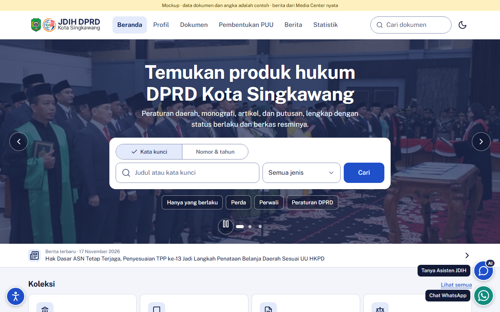
Tombol · 1280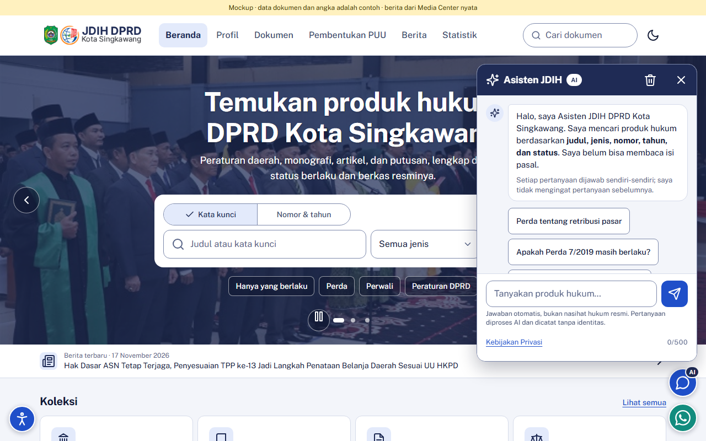
Chat · awal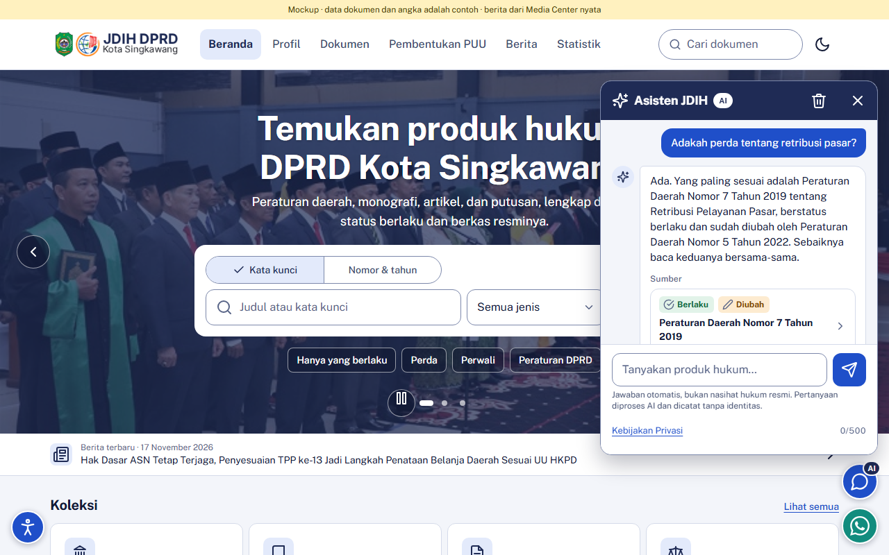
Chat · jawaban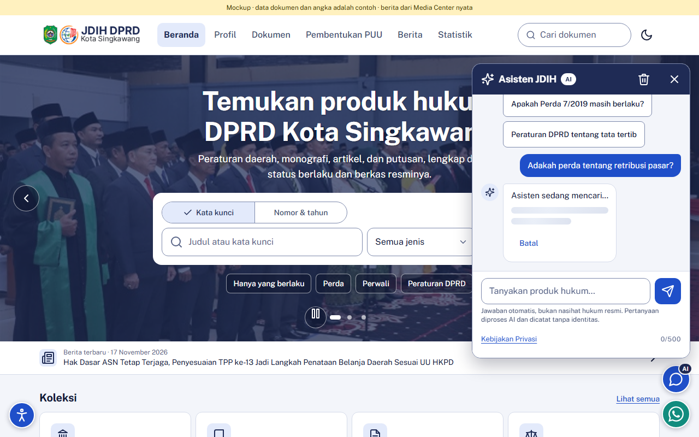
Chat · memuat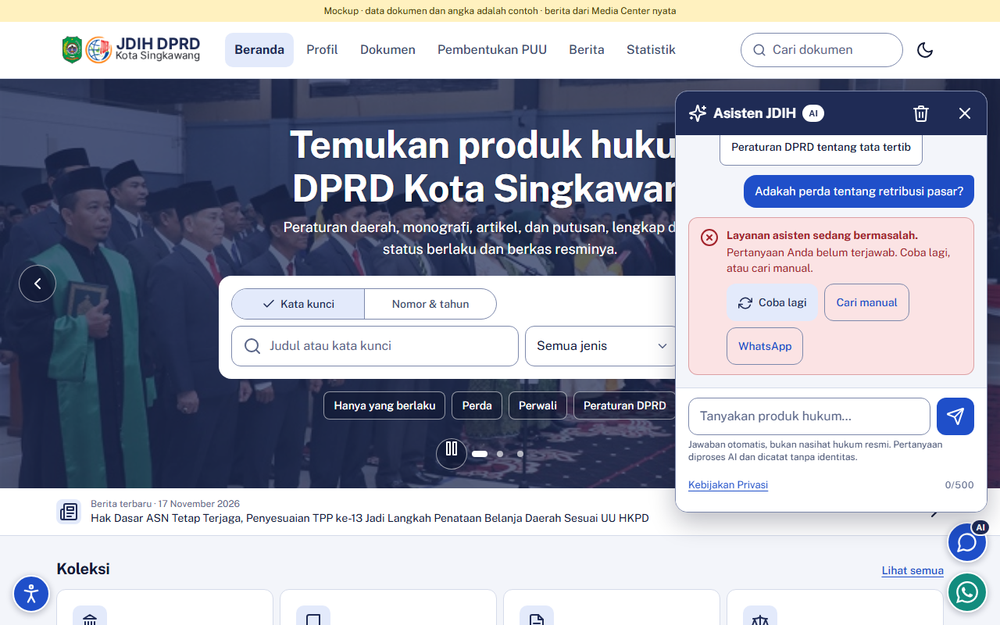
Chat · gangguan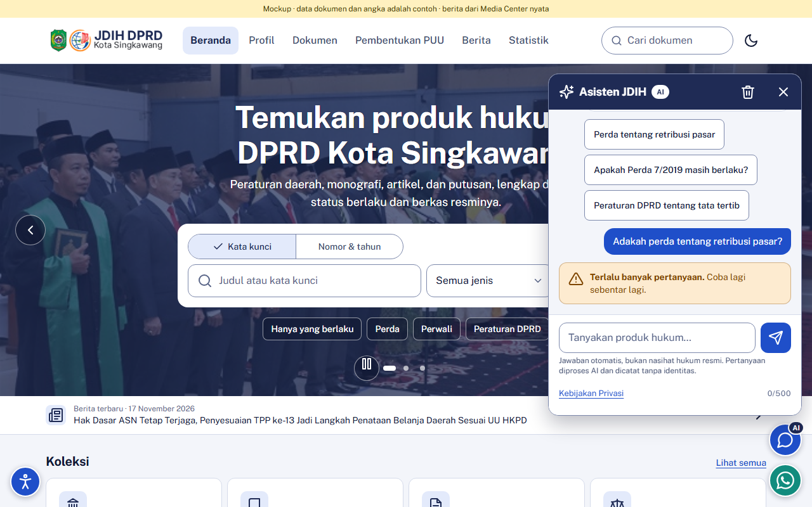
Chat · batas laju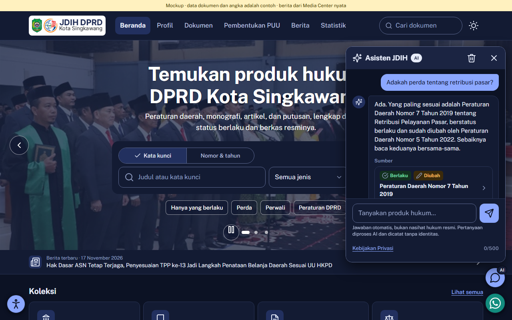
Chat · gelap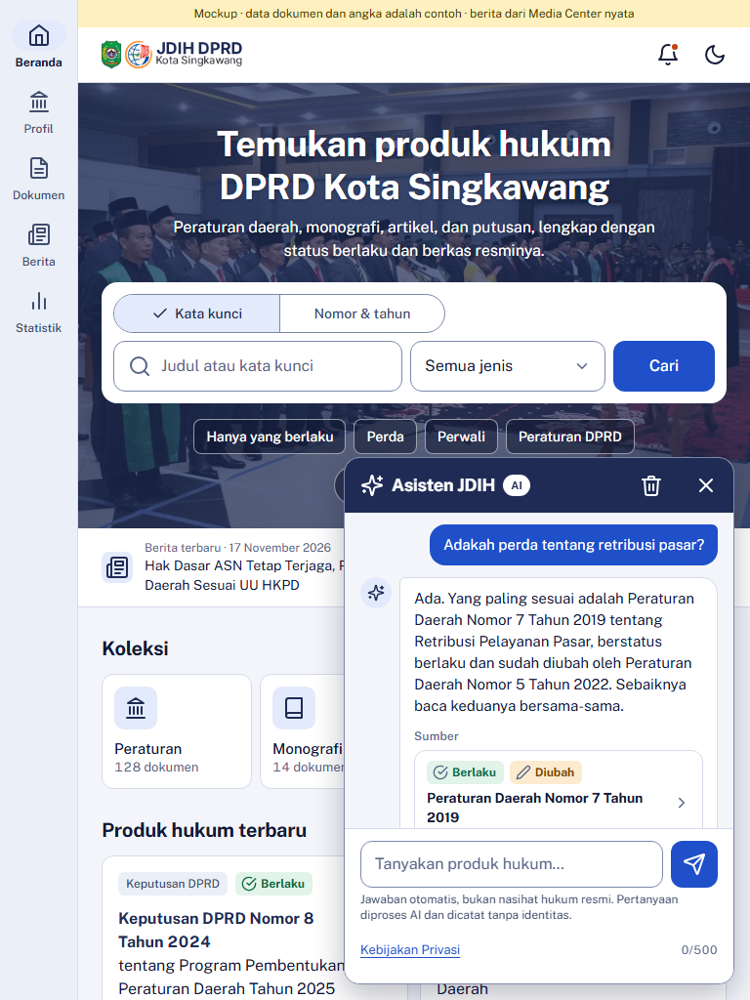
Chat · tablet 768 Ponsel · tombol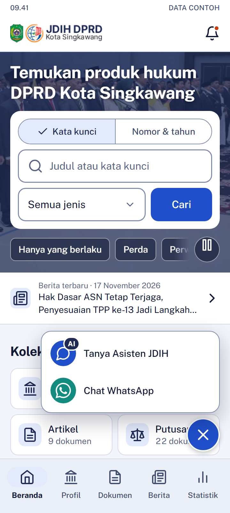
Ponsel · menu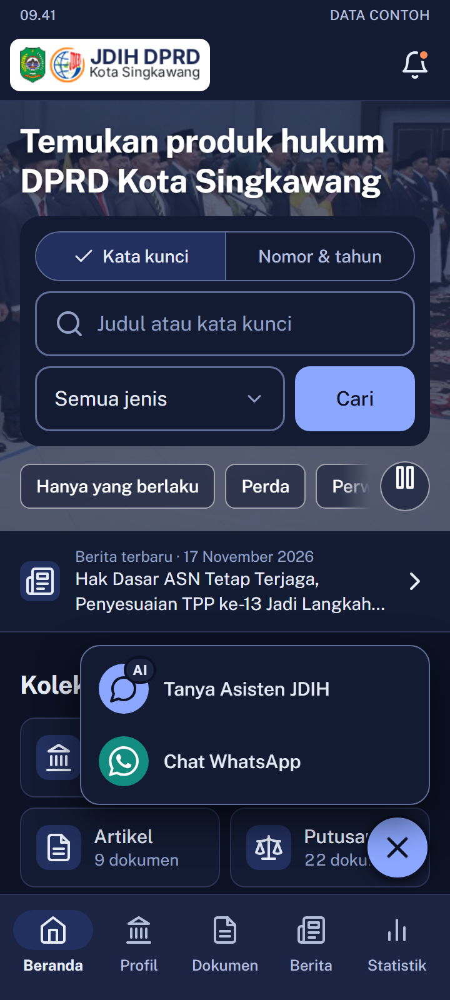
Ponsel · menu gelap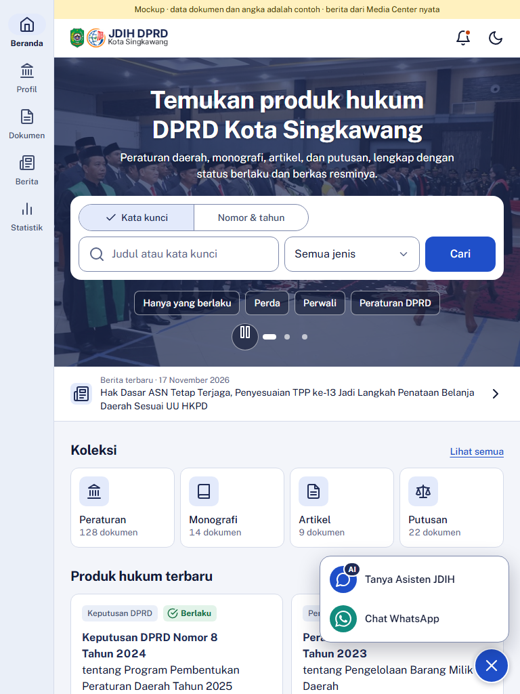
Tablet · menu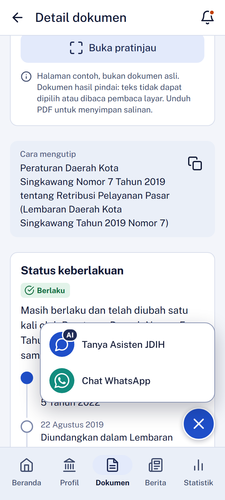
Ponsel · menu di Detail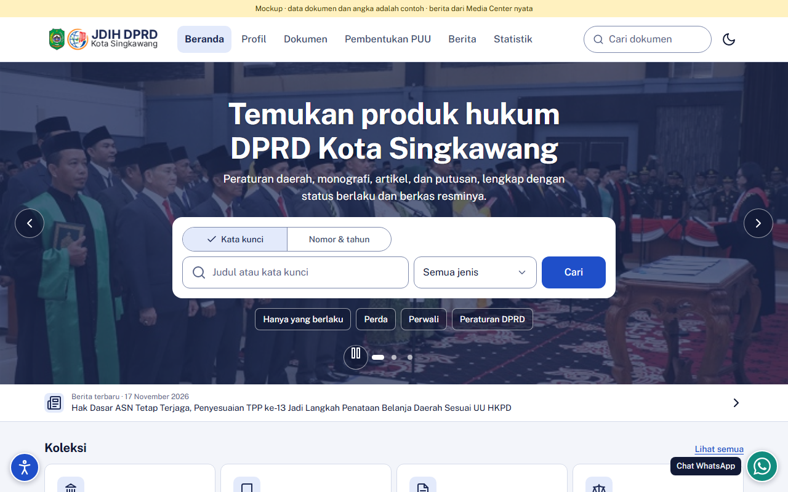
Tanpa Asisten · 1280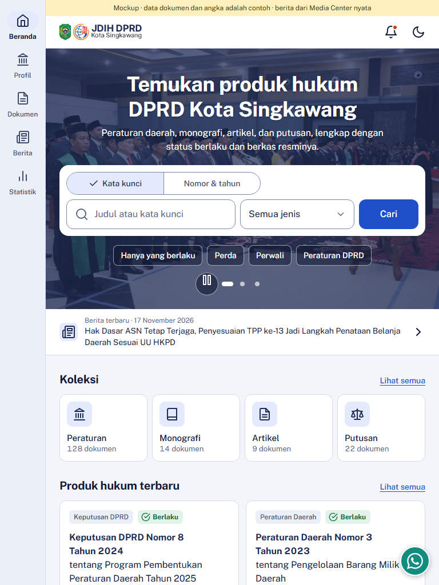
Tanpa Asisten · 768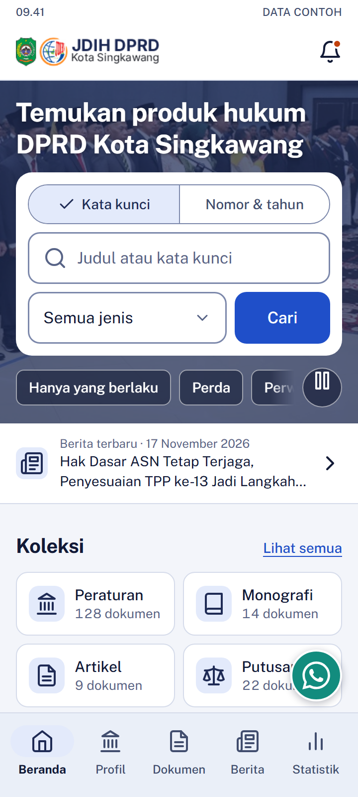
Tanpa Asisten · 360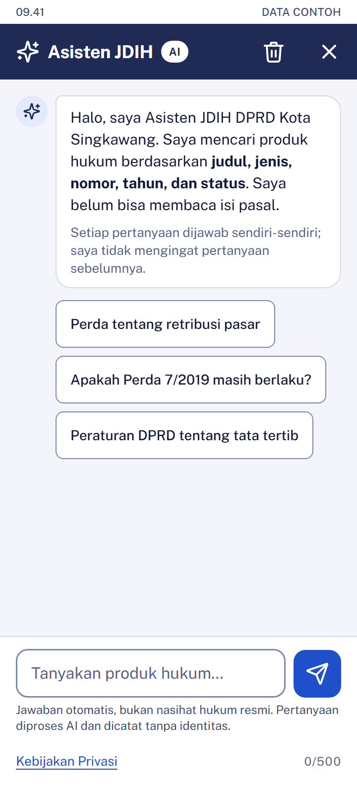
Ponsel · awal Ponsel · jawaban Ponsel · gangguan Digulir ke footer10. Keadaan dan izin notifikasi
- Hasil kosong, gagal memuat, tanpa koneksi, memuat, 404, penjelasan izin notifikasi Android, dan contoh notifikasi sistem.


Sistem desain yang dikunci (bahan DESIGN.md)
Warna cangkang berasal dari teks logo. Semua pasangan teks lolos 4,5:1 di tema terang dan gelap. Tipografi: Public Sans (di-host sendiri, bukan font bawaan model). Jarak kelipatan 4 px, radius 8, 12, dan 16 px, target sentuh 48 px, tanpa bayangan pada kartu.
Yang perlu Anda putuskan
- Persetujuan mockup. Apa yang dilanjutkan dan apa yang terasa salah? Setelah disetujui, baru fase kode dimulai.
- Notifikasi peraturan baru (wajib v1). Mekanisme belum diputuskan. Kandidat: langganan topik FCM dengan pengirim di server, agar API tetap GET saja dan database tetap read-only. Perlu proyek Firebase milik instansi dan menyentuh pihak ketiga (Google).
- Saringan berita. Kata kunci "dewan" memuat berita kebudayaan yang bukan soal DPRD. Pertimbangkan
produk hukum,peraturan daerah,dprd. - Logo resmi dan pedoman identitas. Placeholder sekarang berukuran 200x50 px dan bertulisan gelap, jadi harus berada di bidang terang.
- Widget aksesibilitas. Disetujui atau perlu revisi? Dua hal untuk dipertimbangkan: (a) tanpa aturan tertulis, targetnya WCAG 2.2 (minimum Level A, saran AA) tanpa klaim kepatuhan terhadap aturan tertentu; daftar fitur diambil dari WCAG dan permintaan pemeriksa, tanpa pembaca teks; (b) di bawah 1024 px tidak ada tombol melayang, sehingga pemeriksa yang membuka situs di ponsel akan menemukannya di Profil › Tampilan, bukan sebagai tombol mengambang.
- Pratinjau dokumen. Disetujui atau perlu revisi? Mockup: desktop (1024 px ke atas) otomatis saat seksi terlihat; ponsel dan tablet kartu dengan ketukan (tablet mengikuti ponsel: asumsi saya, mudah diubah bila tablet ingin inline). Ambang ukuran berkas 25 MB adalah nilai awal.
- WhatsApp dan Asisten AI. Nomor WhatsApp (diisi lewat
.env) dan backend chatbot belum ada. Selama backend kosong, tombol Asisten tidak tampil (keadaan "tanpa Asisten"). Satu tombol di bawah 1024 px dan tombol di desktop tetap menutupi sisi kanan konten pada posisi gulir tertentu (di ponsel menyingkir saat menggulir ke bawah); angka ukurnya ada di README. Pertanyaan ke asisten dicatat oleh agent-jdih, jadi masa simpan dan lokasi pemrosesan perlu dari instansi. - Foto resmi untuk hero, serta alamat dan kontak footer. Hero kini berlatar slider foto, tetapi ketiga fotonya hanya contoh dari Media Center (700 px). Produksi butuh foto gedung atau ruang paripurna berhak pakai, minimal 1920x1080. Agar tetap ringan di jaringan lambat, foto pertama dimuat langsung, dua lainnya menyusul, dan tiap foto diekspor sekitar 150 KB.